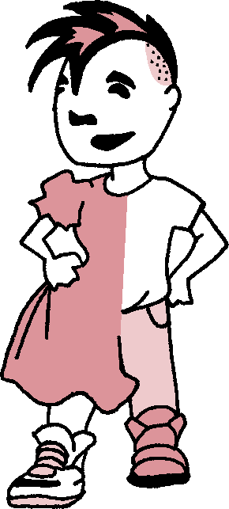
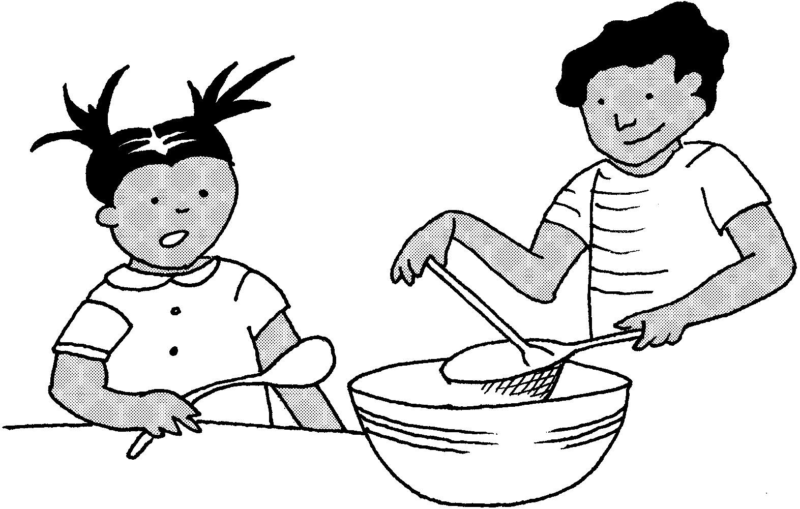
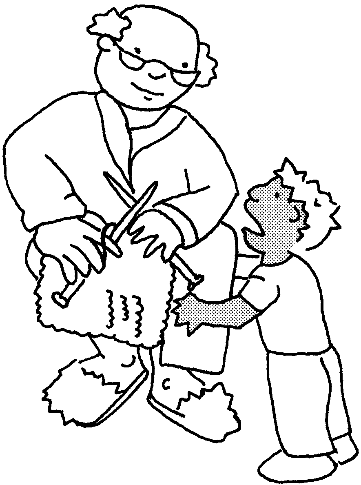
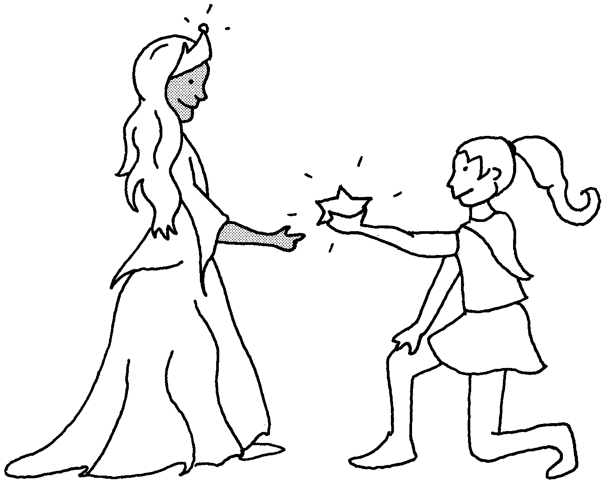
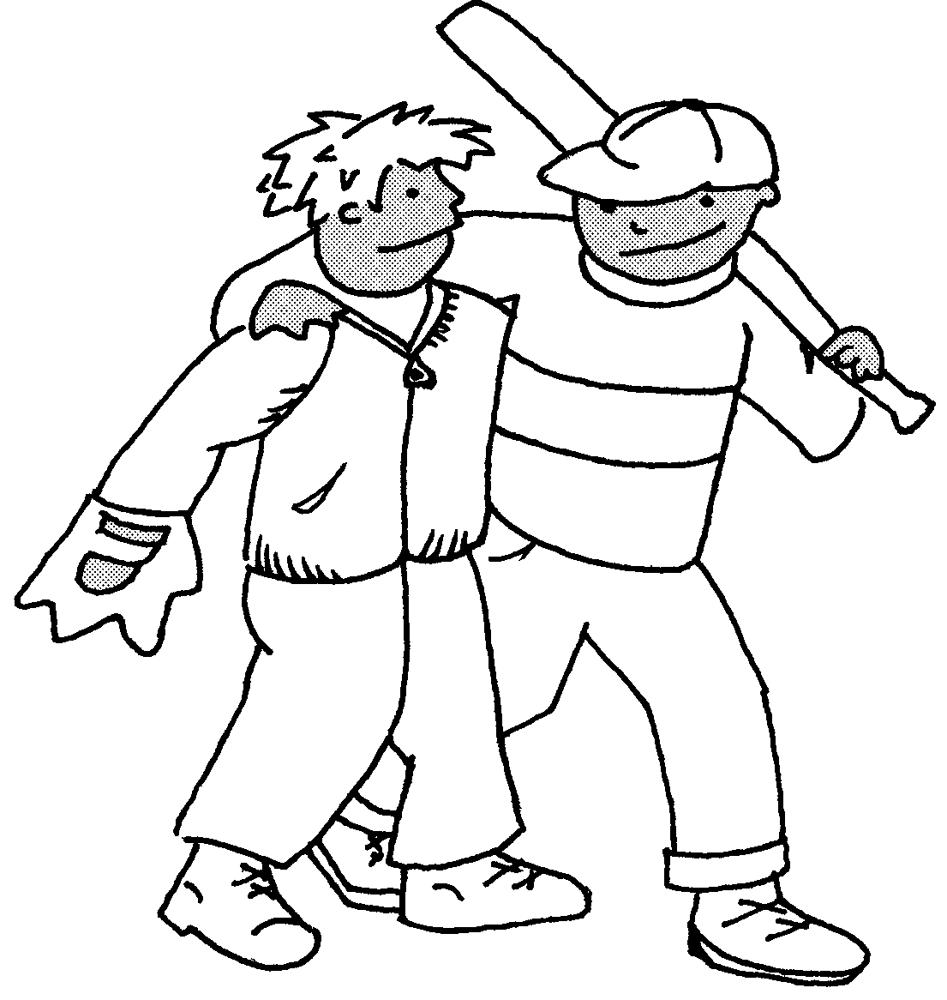
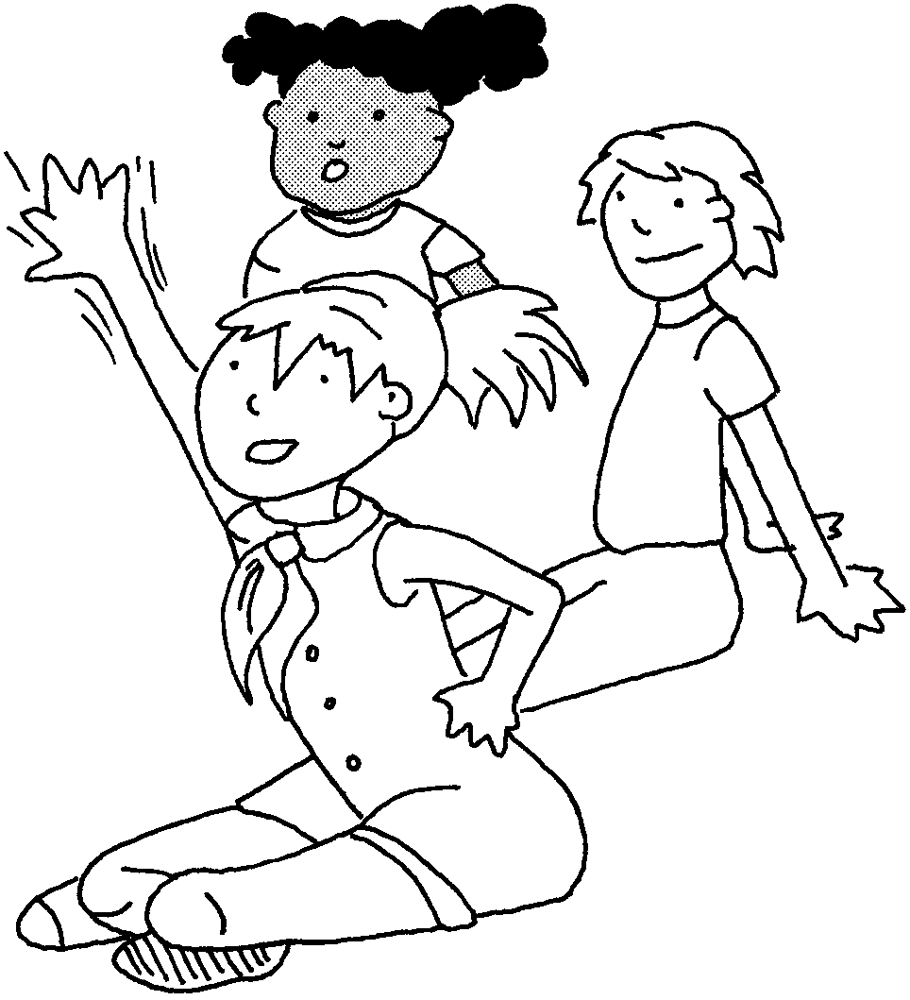
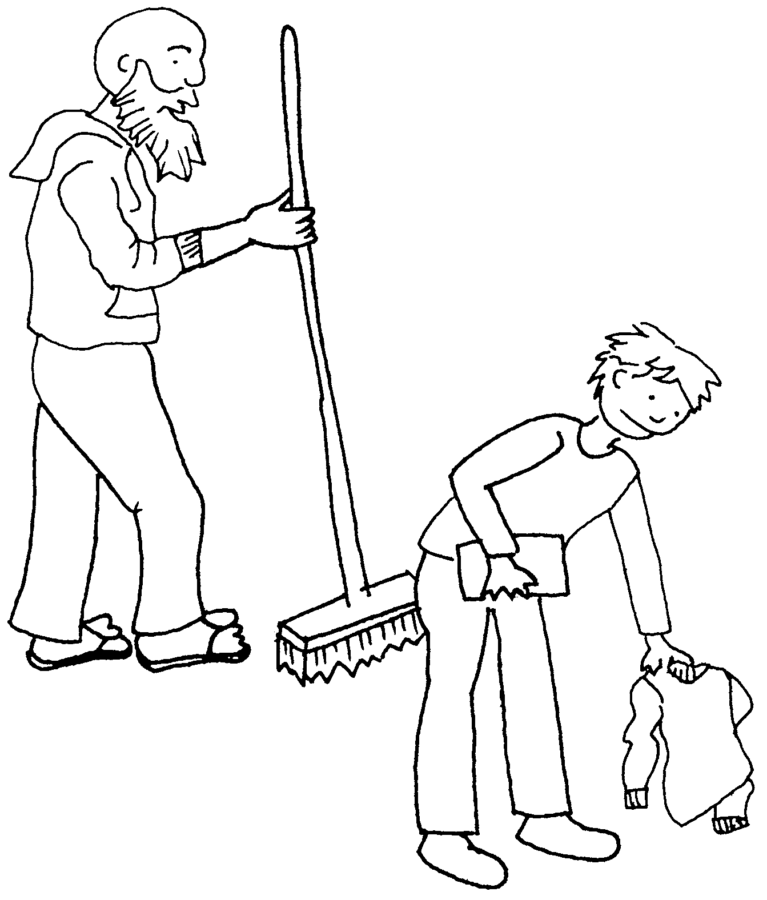
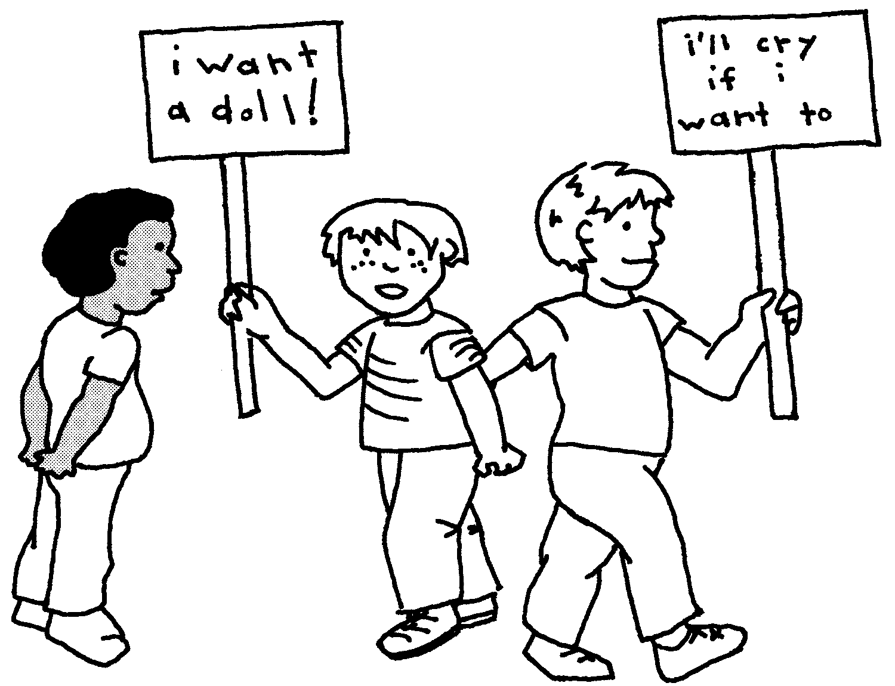
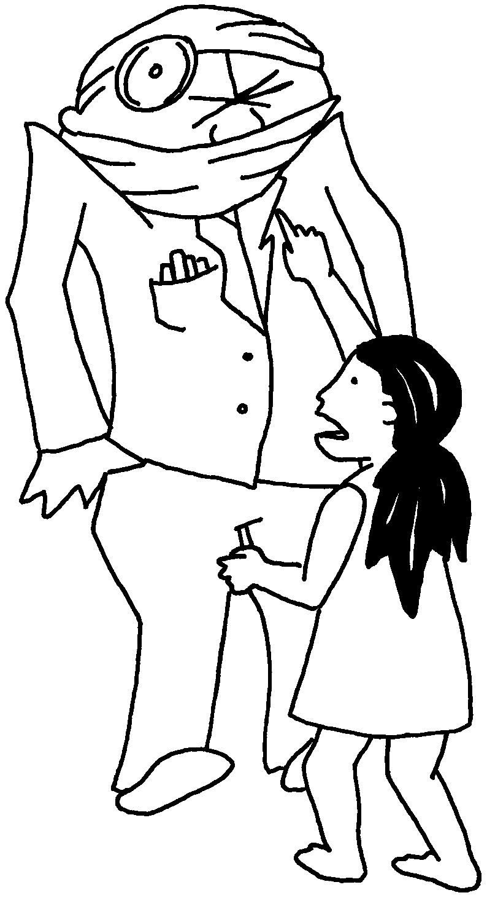
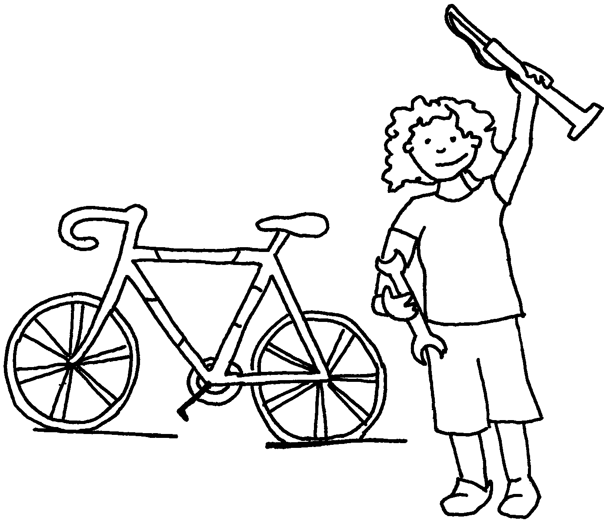

For every girl who is tired of acting weak when she is strong, there is a boy tired of appearing strong when he feels vulnerable. For every boy who is burdened with the constant expectation of knowing everything, there is a girl tired of people not trusting her intelligence. For every girl who is tired of being called over-sensitive, there is a boy who fears to be gentle, to weep. For every boy for whom competition is the only way to prove his masculinity, there is a girl who is called unfeminine when she competes. For every girl who throws out her e-z-bake oven, there is a boy who wishes to find one. For every boy struggling not to let advertising dictate his desires, there is a girl facing the ad industry’s attacks on her self-esteem. For every girl who takes a step toward her liberation, there is a boy who finds the way to freedom a little easier.
Adapted from a poem by Nancy R. Smith. CrimethInc. Gender Subversion Kit #69-B.









How do you define gender?
How many genders are there?
What would the world look like without gender?
In what ways do you feel confined or restricted by your assigned gender?
Was the gender assigned to you the one you feel most comfortable with?
What privileges do you or don’t you have due to the gender you’ve been labeled?
Do you feel forced to act in certain ways because of gender?
What happens when you don’t act in these ways?
How do we unlearn gender?
For answers to these questions, think about them often during your daily life; approach situations with these ideas in mind, and be open to answers you might not have expected. When opportunities present themselves, try to implement the things you have learned from your observations---just go for it! Watch closely how your actions influence the world around you, and plan for what you might do better next time. For advanced studies, share your experiences with a group of friends of all sexes as you all try to deconstruct gender together---expressing and confessing, listening and forgiving, suggesting and absolving, these things can foster extraordinary growth in a loving environment.
Inspired by and adapted from the girls will be boys will be girls will be... coloring book created by JT and Irit, who can be contacted at colormegenderless@facehugger.com. Front illustration was redrawn from an original drawing in Bamboogirl zine.